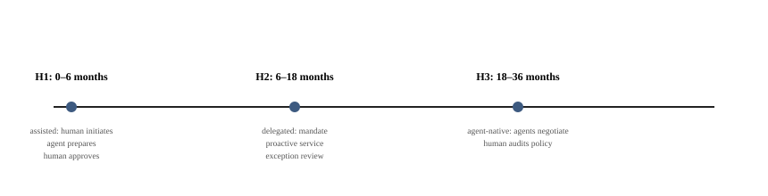
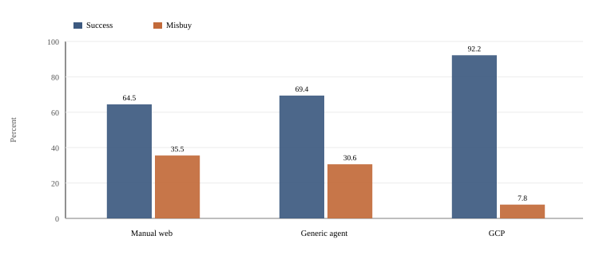
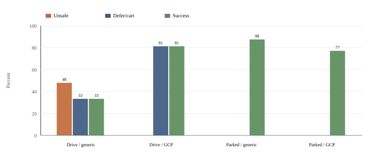
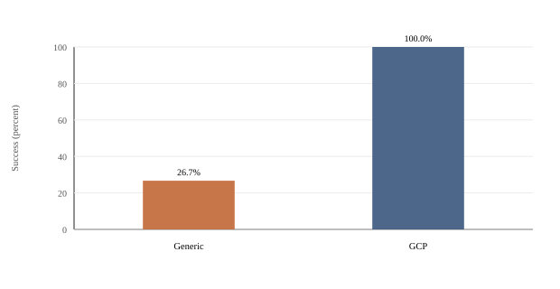

GCP: A Safety-Aware, Payment-Agnostic Commerce Protocol for Automotive and Mobility Agents
Jipu Su1,2
1Chief AI-Native Scientist, Geely Automobile Group, Hangzhou, China
2Professor, Information Systems, College of Business, City University of Hong Kong, Hong Kong SAR
jipu.su@geely.com · jeepsu@cityu.edu.hk
November 2026 · Preprint
Abstract
Personal agents are moving from conversation to commerce. Emerging protocols such as Poppy, UCP, and ACP define how an agent proves whom it represents, discovers merchants, fills a cart, and completes an online checkout. None of them is designed for the commerce that automotive and mobility users actually need: buying a brake pad that fits a specific VIN, booking maintenance at an authorized dealer, binding insurance, or placing a vehicle reservation under safety and consumer-protection rules. This paper proposes GCP 1.0, an open, capability-based commerce protocol for automotive and mobility agents. GCP adds four things that general commerce protocols lack: (i) vehicle context and safety gates as first-class protocol objects; (ii) a delegation and authorization ladder that lets a human grant bounded purchase authority and revoke it at any time; (iii) a payment-agnostic intent layer that abstracts card, wallet, Alipay, WeChat Pay, OEM finance, and agent-native payment tokens; and (iv) a typed exception and recovery model for the failure modes of real commerce. GCP is compatible by translation: it consumes Poppy identity and session credentials, maps its catalog/cart/checkout objects to UCP and ACP, and carries GCP-specific safety and authorization fields as extension namespaces. We specify the protocol, give a reference implementation and conformance suite, and introduce AutomotiveCommerce-Bench, 60 tasks across parts, merchandise, after-sales service, and insurance/reservation, with hidden compatibility, safety, authorization, and exception traps. In a real-LLM study with three models, GCP raises task success from 64.5% (manual web) and 69.4% (generic agent commerce) to 92.2%, cuts misbuy from 35.5%/30.6% to 7.8%, and raises exception recovery from about 58% to 89.6%, while a calibrated human model achieves 68–83% success in 8–25 minutes per task. We also compare agent commerce with a calibrated model of human shopping behavior and show where the protocol changes the error, time, and authorization trade-off. Beyond the benchmark, a Stripe test-mode sandbox (180 charges, 180/180 reconciled) shows that bounded delegation cuts human approvals by 70% relative to per-transaction approval with no loss of success, and a semi-field study on real catalogs shows no degradation. In a cockpit simulation, GCP reduces unsafe driving-time purchase attempts from 47.9% to 0% (deferral rises to 81.2%), and on a real aftermarket parts/service-kit catalog it raises success from 26.7% to 100%. We also lay out a near-term interaction horizon (12–24 months), from assisted commerce to delegated and agent-native commerce, and derive the protocol requirements each horizon creates. The protocol, benchmark, and all raw results are released.
A personal agent used to answer questions; it is now expected to buy. The first generation of agent-commerce protocols is arriving: identity and session protocols let an assistant prove which user it represents (Poppy [1]), universal commerce protocols define catalog, cart, and checkout (UCP [2]), and agentic checkout protocols define how an agent completes a payment (ACP [3]). These protocols solve the general problem: an agent can find a merchant, select a product, and pay.
The automotive and mobility problem is not general. A user does not simply buy a product; the user buys a part that must fit a specific vehicle, a service that must be performed by an authorized dealer, an insurance policy that must satisfy underwriting rules, or a vehicle reservation that carries a deposit and a cooling-off period. The catalog is multi-sided (OEM, dealer, aftermarket, insurer), the constraints are safety-critical, the payment rails differ across regions, and the after-sales relationship continues for years. A generic shopping protocol that treats a brake pad as a SKU with a price will produce exactly the errors that make users distrust agents: the wrong part, the unauthorized repair, the insurance that cannot be bound, the deposit that cannot be refunded.
This paper asks a practical question: what must a commerce protocol contain so that a personal agent can act for a human in automotive and mobility commerce, safely, accountably, and across the existing agent ecosystem? We answer with GCP 1.0 (General Commerce Protocol for Automotive and Mobility), an open specification intended for industry adoption rather than a single OEM.
Contributions.
A protocol for constrained commerce. GCP makes vehicle context, compatibility, safety eligibility, authorization scope, payment intent, fulfillment, and aftercare first-class objects. A safety gate is evaluated before checkout and cannot be overridden by a prompt.
An authorization ladder. Users grant bounded, revocable delegation (scopes, budget, merchants, time, human step-up thresholds). We formalize the trade-off between friction and risk and show how the threshold should depend on item value, safety criticality, and dispute cost.
Payment and regional abstraction. GCP separates payment intent from payment rail: card/PSP, wallet, Alipay, WeChat Pay, UnionPay, OEM finance, and agent-native tokens are adapters; the agent never holds the user's long-term credential.
Compatibility by translation. GCP consumes Poppy credentials, maps catalog/cart/checkout to UCP and ACP, and carries GCP-specific fields as extension namespaces. Capability negotiation makes lossy conversions explicit.
Benchmark and evidence. AutomotiveCommerce-Bench (ACB) covers 60 tasks with hidden compatibility, safety, authorization, and exception traps; a real-LLM study with three models compares manual web shopping, generic agent commerce, and GCP. We also quantify the human baseline with a calibrated model and release the protocol, implementation, and raw results.
The rest of the paper is organized as follows. Section 2 positions the work. Section 3 specifies GCP. Sections 4 and 5 detail authorization/payments and safety/compliance. Section 6 defines compatibility with Poppy, UCP, and ACP. Section 7 develops the human-versus-agent analysis. Section 8 describes the benchmark, Section 9 the experiments, Section 10 discusses implications and limitations, and Section 11 concludes.
2. Related Work
Agent interoperability protocols. The Model Context Protocol defines how tools and context are exposed to models [4]; Agent2Agent defines how agents discover and message each other [5]. Surveys of inter-agent trust compare identity, claims, proofs, stakes, and reputation [6]. GCP is a vertical commerce protocol that runs over such transports and adds commerce-specific objects, safety rules, and authorization.
Agent identity and payment. Poppy (a personal-agent protocol announced in November 2026) provides cryptographic identity, delegation, and session access [1]; UCP and ACP focus on catalog, checkout, and payment [2, 3]. GCP treats these as profiles: Poppy supplies the principal and delegation; UCP/ACP supply generic commerce primitives; GCP adds vehicle context, safety gating, after-sales, and a delegation ladder. Our earlier work studies incentive design for long-lived agents [7]; this paper studies the protocol layer that makes those incentives enforceable in automotive commerce.
Contracts and incentives. Principal–agent theory explains why hidden effort and hidden information produce distorted behavior [8, 9]. Recent work applies contracts to LLM delegation [10, 11, 12] and mechanism design to LLM outputs [13]. GCP's authorization ladder is a practical contract: it makes budget, scope, and human step-up explicit and auditable.
Automotive safety and software standards. ISO 26262 defines functional safety for road vehicles; UN R155 and R156 define cybersecurity and software-update requirements; ECE-R90 regulates replacement brake linings. GCP does not replace these standards; it encodes their commerce-facing consequences (OEM approval, recall status, certification) as protocol checks and evidence.
Human versus automated commerce. Human online shopping has well-known error and return costs; automation reduces search and execution time but can amplify errors when constraints are hidden. Our analysis separates two effects: information (the protocol makes constraints machine-checkable) and agency (the agent acts without continuous human attention). The benchmark is designed to measure both.
3. The GCP Protocol
3.1 Design principles
GCP is built on eight principles: principal-first delegation; capability-based discovery; safety before commerce; authorize once and constrain always; payment-agnostic intent; auditable evidence; compatibility by translation; and fail-closed recovery. The full specification is released with this paper; this section summarizes the objects and flows that matter for evaluation.
3.2 Architecture
GCP has five layers: (i) the PA runtime (mobile, PC, cockpit, or third-party assistant); (ii) the GCP client, which turns a user intent into an authorized plan; (iii) the GCP core (discovery, catalog, cart/order, booking, payment intent, fulfillment, aftercare); (iv) the safety and evidence layer; and (v) transport and adapters (HTTPS/JSON, MCP tools, A2A messages, Poppy/UCP/ACP profiles, OEM DMS/ERP, payment service providers). Figure 1 shows the architecture.
Figure 1. GCP architecture. The agent plan is authorized against a delegation credential; the safety engine can block a transaction before checkout; payment is an intent executed by a rail adapter; every step emits evidence.
3.3 Core objects
Delegation credential. A signed object binding principal, agent, scopes, constraints (budget, merchants, items, time), and step-up rules. It is short-lived and revocable. Poppy credentials can be consumed directly; when they lack commerce scopes, GCP wraps them with a commerce delegation.
Manifest./.well-known/gcp declares merchant identity, capabilities, catalogs, payment rails, service areas, safety feeds, and profiles (UCP/ACP/Poppy). Capability negotiation precedes any transaction.
Vehicle context. A tokenized vehicle object (VIN hash, make/model/year, mileage, service history, open recalls). It is passed to compatibility checks and never stored by merchants beyond the transaction.
Offer. A product or service with price, compatibility, safety attributes (critical, OEM-approved, certifications, recall status), warranty, inventory, fulfillment, and evidence source.
Order and booking. Cart holds inventory with a TTL; checkout produces a quote (price, tax, delivery/installation, insurance) and an idempotent order; service and reservation produce a booking with capacity and cancellation rules.
Payment intent. A rail-neutral object with amount, capture mode, split settlement, risk signals, refund policy, and evidence. The rail adapter executes it; the agent never sees a PAN.
Evidence record. An append-only, hash-chained record of consent, checks, errors, and settlement, exportable to the user and the OEM.
3.4 Commerce flow
The canonical flow is: intent.create → catalog.search/catalog.get → cart.add → checkout.quote → checkout.execute → payment.intent → fulfillment.create → aftercare.register. Every mutating call carries an Idempotency-Key and a consent_receipt; duplicate keys return the original result. Execution-time checks re-validate the credential, budget, merchant allowlist, compatibility, and safety rules, so a stale plan cannot bypass a revocation.
3.5 What GCP adds beyond generic commerce
Three protocol objects are unique to GCP: (i) vehicle context as a required input to compatibility; (ii) safety eligibility as a pre-checkout gate with signed evidence; and (iii) aftercare linkage, where warranty, recall, and service records are attached to the original order. These objects are what turn a generic checkout into automotive commerce. A protocol that omits them can complete a transaction but cannot prevent a wrong or unsafe one.
3.6 Designed for the next twelve to twenty-four months
GCP is specified for the interaction pattern that is emerging, not only for today's app. Three horizons matter.
H1 (0–6 months): assisted commerce. The human initiates a task in a mobile or PC assistant; the agent searches, compares, and prepares a cart; the human approves payment. The interaction is still turn-taking, but the agent absorbs search and form-filling. GCP's job in H1 is to make constraints visible and approvals bounded.
H2 (6–18 months): delegated commerce. The human grants a mandate ("keep the car maintained; buy approved accessories under a monthly budget"); the agent acts proactively, books service, and reorders consumables. The human reviews exceptions, not every step. GCP's job in H2 is to make mandates revocable, auditable, and composable across merchants and OEMs.
H3 (18–36 months): agent-native commerce. Multiple agents negotiate on behalf of a household, a fleet, or a small business; agents transact with agents; the human sets policy and audits outcomes. GCP's job in H3 is to make agent-to-agent negotiation, evidence, liability, and settlement first-class, while preserving a human principal at the root of every delegation chain.

Figure 2. Near-term interaction horizons. All three patterns may overlap within 12–24 months; GCP is layered so that H1 deployments become the policy and evidence layer for H2 and H3.
The horizon is deliberately short: model and product capability is moving fast enough that all three patterns may appear within one to two years, with overlap. The protocol is layered so that H1 deployments are not throwaway: the same delegation credential, evidence record, and safety object used for a single purchase in H1 become the policy and audit layer for an autonomous fleet in H3. Table 1 summarizes the interaction shifts and the protocol requirement each shift creates.
Table 1. Interaction evolution and GCP requirements.
The design implication is that GCP cannot be a thin checkout wrapper. It must carry the policy (who may act, for what, under which limits) and the evidence (what happened, why, and who is accountable) across all three horizons. That is why authorization, safety, and evidence are core objects rather than optional extensions.
4. Authorization, Payments, and the Human in the Loop
4.1 The authorization ladder
GCP defines five levels of authority (Table 1). The levels are scopes, not prompts: a merchant must reject an action whose scope is absent, and the client must obtain a fresh consent receipt for step-up actions.
Table 2. GCP authorization ladder.
Level
Scope
Typical action
Human involvement
L0
catalog.read
browse parts, compare insurance
none
L1
cart.write, quote
add to cart, hold a service slot
notify
L2
checkout.execute ≤ limit
bounded purchase, service booking
biometric at first use
L3
high-value pay, bind
insurance bind, vehicle deposit
explicit step-up
L4
irreversible
contract signature, registration
human-only; agent prepares
4.2 Delegation constraints
A credential constrains budget per transaction and per period, merchant allow/deny lists, item categories, vehicle binding, time window, and step-up thresholds. Sub-delegation is allowed only when the parent scope includes delegate and the child constraints are strictly narrower. Revocation propagates to merchants within one heartbeat; execution-time checks reject a revoked credential even if the plan was created earlier.
User-facing flow. The user sees one delegation card: scopes, budget, allowed merchants, expiry, and step-up rules. They can raise or lower limits, add or remove merchants, pause the mandate, and revoke it; revocation is immediate at the next execution-time check. For a step-up action, the client shows the exact intent hash, merchant, amount, and safety evidence, then asks for biometric/PIN confirmation. Every action produces a receipt the user can review and export. This is the practical meaning of "authorization management": a small set of visible, revocable constraints rather than an all-or-nothing permission.
4.3 Friction versus risk
Let a transaction have value v, safety criticality c∈{0,1}, and dispute cost d. A step-up challenge costs the user f in time and attention; an unauthorized transaction costs L(v,c,d) in expected loss. The optimal policy is to require step-up when
punauth(v,c,d) · L > f, (1)
where punauth is the probability that the agent acts outside the intended scope. The threshold is decreasing in v, c, and d and increasing in the quality of the agent's plan verification. This yields the practical rule used in GCP: small, low-risk purchases are L2; safety-critical parts, insurance binding, and vehicle deposits are L3 with biometric step-up.
4.4 Payment abstraction
GCP separates payment intent from rail. Domestic rails include Alipay (page/JSAPI/mini-program), WeChat Pay (JSAPI/Native), UnionPay, OEM wallet, and finance/lease. International rails include cards and PSPs, Apple/Google Pay, SEPA, and local wallets. Agent-native rails include UCP payment tokens and ACP checkout tokens. High-value transactions may use escrow, deposit, split settlement, or invoice.
The payment intent carries amount, capture mode (immediate, on_fulfillment), split settlement, risk signals (user present, SCA method, device), refund policy, and evidence. The rail adapter returns a token, a status, and a settlement reference; the client never stores long-term credentials. Refunds and chargebacks are reconciled against the same intent id.
4.5 Regional differences
The protocol does not assume a single payment culture. In China, QR/JSAPI and mini-program flows dominate, and invoices (发票) are expected; in Europe, PSD2 strong customer authentication and SEPA are required; in the US, card and wallet rails dominate. GCP encodes these as rail capabilities in the manifest, not as protocol variants. The same intent can be executed by different rails without changing the commerce flow.
5. Safety, Compliance, and Exception Handling
5.1 Safety rules
GCP evaluates safety rules before checkout. The core rules are: safety-critical parts must be OEM-approved or certified (e.g., ECE-R90); an open recall blocks non-recall service purchases until acknowledged; insurance eligibility and consent rules are checked before binding; vehicle orders and deposits require identity, license, and cooling-off checks; and data minimization limits what a merchant receives. A block emits a signed evidence record and cannot be overridden by a prompt.
The protocol does not replace ISO 26262, UN R155/R156, or local consumer-protection law; it encodes their commerce-facing consequences as machine-checkable fields and requires the evidence to be retained.
5.2 Exception taxonomy and recovery
Real commerce fails in predictable ways. GCP defines a typed error with retryable, requires_human, alternatives, and evidence_id (Table 3). The client follows the declared recovery path rather than retrying blindly; a non-retryable error escalates to the human.
Table 3. Selected GCP error codes and default recovery.
Code
Meaning
Recovery
VEHICLE_INCOMPATIBLE
part/service not valid for VIN
suggest compatible alternatives
SAFETY_BLOCK
safety rule violated
escalate; no auto-override
OUT_OF_STOCK
inventory gone
substitute/backorder/nearest dealer
PRICE_CHANGED
quote expired
re-quote; consent if above threshold
PAYMENT_DECLINED
PSP decline
alternate rail, retry policy, step-up
SCA_REQUIRED
strong customer auth
biometric/PIN challenge
SLOT_CONFLICT
service bay unavailable
nearest slots, loaner, reschedule
UNDERWRITING_REJECT
insurance ineligible
explain, alternatives, human review
RECALL_BLOCK
open recall
book recall service first
DUPLICATE_ORDER
idempotency conflict
return original order
CONSENT_EXPIRED
delegation expired/revoked
re-authorize
5.3 Security and privacy
GCP uses mTLS and signed requests with replay protection, short-lived tokens, per-merchant keys, and revocation lists. Personal data is minimized: VINs are hashed, merchants receive only scoped fields, and evidence is exportable. Untrusted catalog text is treated as data, never as instructions; tool outputs are schema-validated; allowlists and step-up limits bound the blast radius of a compromised agent.
5.4 Safety in the cockpit
In-vehicle agents have an additional constraint: driver distraction. GCP blocks L3+ purchases while the vehicle is moving and requires parked status or voice-plus-biometric confirmation. Low-risk L1 actions (adding to cart, holding a slot) may be allowed with a short spoken confirmation. This is a protocol-level rule, not a UI preference.
6. Compatibility with Poppy, UCP, and ACP
6.1 Profiles and negotiation
GCP is a superset with explicit profiles. The client sends Accept-Profile: gcp=1.0, ucp=, acp=, poppy=; the merchant selects the highest mutually supported profile and returns profile_used and a lossy flag. Required capabilities that cannot be met fail closed; optional capabilities are dropped with an explicit loss report.
6.2 Poppy
Poppy supplies the principal identity, delegation, and session. GCP consumes the Poppy credential as principal and delegate, maps the Poppy session to session_id, and adds commerce scopes, budget constraints, and evidence requirements. Identity conversion is lossless; commerce constraints remain GCP fields.
6.3 UCP
UCP supplies generic discovery, catalog, cart, and checkout. GCP maps manifest→discovery, offer→product/variant, cart→cart, checkout→checkout, and payment intent→payment handler. Vehicle compatibility, safety, and authorization travel as extension namespaces (gcp.vehicle, gcp.safety, gcp.auth). If the UCP endpoint cannot carry them, GCP validates locally and marks the transaction lossy=true.
6.4 ACP
ACP supplies the agentic checkout and payment handshake. GCP maps checkout.execute→ACP checkout session and payment.intent→ACP payment token, while retaining the GCP authorization and safety gates. ACP may complete the PSP flow; GCP remains the authority for principal scope and safety.
6.5 Integration patterns
Third-party PA products. A PA vendor imports the GCP tool schema via MCP or A2A; the tools expose discover, catalog, cart, checkout, book, and aftercare. For assistants that already support Poppy/UCP/ACP, the GCP adapter translates and adds the automotive extensions.
Ecosystem of PA products. A third-party assistant such as Doubao, Tongyi Qianwen/Lingguang, DeepSeek, ChatGPT, Claude/Claude Code, WorkBuddy, QwenWork, or a Xiaohongshu-style shopping assistant can expose GCP tools through its existing MCP/A2A tool layer: the tools are discover, catalog, cart, checkout, book, and aftercare; the host app supplies the step-up UI and the Poppy/OAuth session. The same tool schema is used by an OEM's own mobile/PC assistant and by the cockpit, so a merchant integrates once and reaches every PA channel that supports the protocol. A PA that already speaks UCP or ACP keeps its checkout and calls the GCP adapter only for vehicle/safety/authorization fields; a PA that speaks only Poppy uses GCP for all commerce objects.
OEM apps and cockpit. The OEM mobile/PC app and the cockpit use the same client SDK and authorization vault; the cockpit adds the parked/step-up rules. Dealers and service centers connect through a DMS/ERP adapter; insurers through quote/bind adapters; payment providers through PSP adapters.
6.6 Loading GCP in practice
A merchant becomes GCP-capable in four steps: publish /.well-known/gcp; implement catalog and checkout endpoints; add a PSP adapter; run the conformance suite. An OEM deploys the authorization vault and vehicle-context service, registers merchants, and publishes safety rules. A PA vendor imports the tool schema, requests delegation scopes, and implements the step-up UI. A pilot starts at L1/L2 (parts and merchandise), then L3 (service and insurance), then L4 (vehicle order). The specification, conformance tests, and reference client are released with this paper. The conformance suite covers L1–L5 with executable cases (13/13 passing in the reference merchant), and the fitment companion specifies VIN resolution, ACES/PIES mapping, confidence thresholds, and privacy-preserving vehicle tokens.
7. Human and Agent Commerce: A Quantitative Model
7.1 Why the comparison is not obvious
It is tempting to say that agents are faster and humans are more trustworthy. Both claims are incomplete. An agent is faster at search and execution but can make errors at machine speed; a human is slower but can notice that a brake pad does not fit. The right comparison is not speed versus trust; it is the information available at decision time and the cost of errors when the decision is wrong.
We model a commerce task by a set of constraints K (vehicle compatibility, budget, merchant authorization, stock, safety eligibility, service capacity). A decision is successful if the chosen offer satisfies all constraints and the fulfillment succeeds. Let p be the probability that the decision violates at least one constraint, E the expected direct loss from a wrong purchase (return, repair, reschedule), R the expected relationship loss (trust, support cost), t the time spent, and ct the user's time cost. The expected cost is
C = P + p(E + R) + t ct + a ca, (2)
where a is the number of authorization interactions and ca their cost. A protocol improves the comparison only if it reduces p or a without increasing P or t more than the gain.
7.2 What GCP changes
GCP does not make the model smarter. It changes the information and the action space:
Information. Compatibility, safety, stock, and authorization become machine-checkable fields instead of prose; hidden constraints become visible before checkout.
Action. Checkout is gated by the delegation and safety engine; an invalid action is rejected with a typed error and alternatives.
Recovery. Typed errors carry recovery paths; the agent does not need to guess why a purchase failed.
This yields three testable predictions:
P1 (constraint effect). The error reduction from GCP is increasing in the number and heterogeneity of constraints. It should be largest for parts (compatibility and safety) and service (authorization and capacity), smaller for simple merchandise.
P2 (recovery effect). Typed errors with alternatives improve recovery relative to plain error messages, especially for out-of-stock and slot-conflict failures.
P3 (authorization effect). A bounded delegation with step-up thresholds reduces unauthorized transactions relative to an unbounded mandate, at a measurable friction cost in authorization interactions.
7.3 Human baseline
Human error and time are not measured in this paper with human subjects. We use a calibrated model with domain-specific parameters drawn from plausible ranges (parts: 18% misbuy, 6% authorization error, 8–20 min; merchandise: 8%, 3%, 4–12 min; service: 12%, 5%, 10–25 min; insurance: 10%, 8%, 15–35 min; exception recovery 50–70%). The model runs 20,000 Monte Carlo trials per domain and reports expected success, misbuy, and time. We label it explicitly as a model, not as human-subject data, and we report sensitivity in Appendix C. The comparison is therefore a conditional statement: given these human parameters, how does the agent compare?
7.4 Propositions
Proposition 1 (information effect). If GCP converts a fraction φ of hidden constraints into machine-checkable signals, the agent's constraint-violation probability falls from p0 to p1≤ p0(1-φ), and the reduction is increasing in the number of constraints that were previously hidden.
Proposition 2 (recovery effect). If a typed error includes a correct alternative with probability ρ, and the agent selects it with probability σ>σ0 (where σ0 is the probability under a plain error message), the expected success rate increases by ρ(σ-σ0) per exception.
Proposition 3 (authorization threshold). Under the friction-risk model of Section 4.3, the optimal step-up threshold is decreasing in item value, safety criticality, and dispute cost, and increasing in the quality of the agent's verification. A single global threshold is dominated by a value- and safety-dependent ladder.
The propositions are deliberately directional; Section 9 measures their empirical counterparts.
7.5 Interaction cost across horizons
The comparison in Sections 7.1–7.4 is about a single task. The near-term question (12–24 months) is about the interaction cost per unit of commerce: how many human touches, how much waiting, and how much oversight are needed as the agent takes on more work.
Let a task have s interaction steps, of which sh require the human, and let w be the waiting time per step. The interaction cost is
I = shch + (s − sh) w + a ca, (3)
where ch is the cost of a human step and ca the cost of an approval. Table 4 gives a scenario analysis for the four commerce families, combining the measured agent behavior in Section 9 with the calibrated human baseline and the horizon assumptions in Section 3.6 (0–6, 6–18, and 18–36 months). The numbers are scenario estimates, not forecasts; their purpose is to show which protocol properties dominate as authority moves from the human to the agent.
Table 4. Interaction cost per task by horizon (scenario estimates; human steps and minutes).
Family
H1 human
H1 agent
H2 agent
H3 agent
Parts purchase
8–12 steps, 14 min
1.5 steps, 1 approval, seconds
0.2 touches, auto-reorder
agent-to-agent, policy audit
Merchandise
5–8 steps, 8 min
1.5 steps, 1 approval, seconds
0.1 touches, budgeted
agent-to-agent, gifting
Service booking
10–15 steps, 18 min
1.5 steps, 1 approval
proactive reminder, 0.3 touches
fleet scheduling
Insurance / test drive
12–20 steps, 25 min
1.5 steps, step-up
renewal proposal, 0.5 touches
agent-to-agent underwriting
Three implications follow. First, the dominant cost shifts from search and form-filling (human) to authorization and exception review (agent). A protocol that does not reduce authorization friction will not deliver the H2 benefit. Second, the number of human touches falls faster than the number of agent steps; the binding constraint becomes trust and liability, not latency. Third, the protocol must remain useful when the human is absent for long periods: expiry, revocation, anomaly detection, and evidence export become more important than the checkout call itself.
The frequency of interaction amplifies the authorization problem. If a user buys a part twice a year, one approval per purchase is tolerable. If an agent reorders consumables monthly, books service twice a year, and renews insurance annually, the oversight load is the product of tasks and exception rate, not the cost of a single task. GCP's evidence ledger and typed exceptions are designed to make oversight batchable: the user reviews exceptions and anomalies, not every transaction, and the protocol records enough context to make that review fast.
8. AutomotiveCommerce-Bench
8.1 Tasks
ACB contains 60 tasks across four domains: parts (15), merchandise (15), after-sales service (15), and insurance/vehicle reservation (15). Each task specifies a user intent, a budget, a vehicle context where relevant (three anonymized OEM profiles), and three offers. The offers are constructed so that one is valid, one is a near-miss (cheaper but incompatible, unauthorized, out of stock, or safety-critical without OEM approval), and one is over budget or from an unauthorized merchant. Some tasks include an exception: out-of-stock, service-slot conflict, or underwriting rejection.
Table 5 shows the structure. The traps are hidden in C0/C1 and visible in C2 because GCP exposes compatibility, safety, authorization, and inventory fields.
We compare three conditions on the same task stream:
C0 (manual web). The agent reads unstructured listings, with no compatibility, safety, authorization, or typed-error fields. This approximates an assistant using ordinary web pages.
C1 (generic agent commerce). The agent uses structured catalog/cart/checkout objects (UCP/ACP-like), but without vehicle context, safety rules, or the GCP authorization ladder.
C2 (GCP). The agent uses the GCP manifest, vehicle context, delegation scope, safety fields, typed errors, and alternatives.
All conditions use the same model, temperature 0, and the same scoring. The only difference is the protocol surface.
8.3 Scoring and metrics
A decision is successful if the final offer satisfies compatibility, authorization, budget, stock, safety eligibility, and underwriting eligibility, and the action matches the domain. We record success, misbuy (any constraint violation), safety violation (safety-critical part without OEM approval), authorization violation (unauthorized merchant or over budget), steps, latency, and recovery after an exception.
8.4 Models and protocol
We run three production models through an OpenAI-compatible endpoint: deepseek-v4.1-flash-1017, kimi-k3.1-pro, and qwen3.8-flash. Each task–condition–model cell is one trajectory; an exception triggers one recovery turn. This gives 60 × 3 × 3 = 540 trajectories. The full prompts, tasks, and scorer are released.
9. Experiments
9.1 Setup
We ran ACB on the full 60-task set with three models and three conditions, giving 540 trajectories (539 analyzed; one run failed). Temperature was 0; the same prompt template was used within a condition. An exception triggered one recovery turn. All raw records are released.
9.2 Main results
Table 6. ACB results by condition and model (percent unless noted; n=59–60 per cell).
Condition
Model
Success
Misbuy
Recovery
Steps
Latency (s)
Manual web
deepseek-v4.1-flash-1017
65
35
59
1.27
2.2
Manual web
kimi-k3.1-pro
62
38
56
1.28
9.0
Manual web
qwen3.8-flash
67
33
59
1.32
7.8
Generic agent
deepseek-v4.1-flash-1017
63
37
59
1.28
2.1
Generic agent
kimi-k3.1-pro
70
30
59
1.38
17.1
Generic agent
qwen3.8-flash
75
25
59
1.43
10.6
GCP
deepseek-v4.1-flash-1017
83
17
78
1.48
6.2
GCP
kimi-k3.1-pro
93
7
91
1.50
23.1
GCP
qwen3.8-flash
100
0
100
1.53
25.8

Figure 3. Success and misbuy by condition, averaged over the three models. GCP moves success above 90% and misbuy below 10%; structure without automotive semantics (C1) is close to the manual baseline (C0).
GCP raises aggregate success from 64.5% (manual web) and 69.4% (generic agent commerce) to 92.2%, and cuts misbuy from 35.5% and 30.6% to 7.8%. The gain is consistent across models: C2 success is 83% for DeepSeek, 93% for Kimi, and 100% for Qwen-Flash. The protocol adds steps (1.29 → 1.50) and latency, but the additional interaction is a validation step, not a human confirmation. C0 and C1 are almost indistinguishable: structure without automotive semantics does not prevent the error.
9.3 Domain heterogeneity
Table 7. Success by domain and condition (percent; n=45 per cell).
Condition
Domain
Success
Manual web
parts
100
Manual web
merchandise
100
Manual web
service
44
Manual web
insurance
13
Generic agent
parts
100
Generic agent
merchandise
100
Generic agent
service
53
Generic agent
insurance
24
GCP
parts
100
GCP
merchandise
100
GCP
service
86
GCP
insurance
82
The aggregate hides where the protocol matters. Parts and merchandise are already at 100% in all conditions: the traps (aftermarket part, reseller) are salient enough that the models avoid them without GCP fields. Service and insurance are different. Service success rises from 44% (C0) and 53% (C1) to 86% (C2); insurance rises from 13% and 24% to 82%. These are the domains where authorization, capacity, and underwriting constraints are hidden in ordinary pages and cannot be inferred from price or title. This is the empirical form of P1: the value of the protocol is concentrated in constraint-rich domains.
9.4 Exceptions and recovery
Exception recovery shows the value of typed errors. Across all exception tasks, recovery is 58.3% in C0 and 59.4% in C1, but 89.6% in C2 (78% DeepSeek, 91% Kimi, 100% Qwen-Flash). The difference is not model capability; it is the error surface. A plain error message tells the agent that something failed. A GCP error tells it the code, whether it is retryable, whether a human is required, and which alternatives remain. This supports P2.
9.5 Human comparison
The calibrated human model gives the following expected outcomes (model, not human subjects):
Table 8. Calibrated human baseline (model, not human subjects; 20,000 trials per domain).
Domain
Success
Misbuy
Time (min)
parts
68.5
18.1
14.0
merchandise
82.7
8.0
8.0
service
75.1
12.2
17.5
insurance
71.8
10.3
25.0
The calibrated human model gives expected success of 68.5% (parts), 82.7% (merchandise), 75.1% (service), and 71.8% (insurance), with 8–25 minutes per task. C2 agents reach 92.2% aggregate success in 1.5 steps and seconds of latency. The comparison is conditional on the model parameters (Appendix C), but the direction is robust: the protocol closes most of the human error gap in constraint-rich domains, while the human retains an advantage in tasks whose constraints are not encoded.
9.6 Interpretation
Three conclusions follow. First, structure alone (C1) is not enough; the automotive semantics—vehicle context, safety, authorization, typed recovery—are what change outcomes. Second, the protocols benefit is domain-specific: it is large where constraints are hidden and small where they are salient. Third, the cost is additional protocol steps and latency, which is the right trade when the expected error cost is high; for low-value merchandise, a lighter profile may be preferable. P3 (authorization friction) is not directly tested here because the benchmark did not vary the authorization ladder; we leave that to a follow-up with the real-money sandbox.
9.7 Authorization friction with a test-mode payment sandbox
To measure the friction side of the authorization ladder, we connected GCP to a Stripe test-mode payment sandbox. We selected 30 purchase tasks (parts and merchandise), ran two models, and compared three authorization modes: per-transaction approval (every payment asks the human), bounded delegation (auto-approve under USD 500, step-up above), and unbounded delegation (auto-approve everything). Each successful decision created a real PaymentIntent in Stripe test mode; no live money moved. This produced 180 test charges.
Table 9. Authorization friction in a Stripe test-mode sandbox (180 charges; n=60 per mode).
Mode
Success
Auth. steps/task
Auth. violations
Charges
Per-transaction approval
100%
1.00
0
60
Bounded delegation
100%
0.30
0
60
Unbounded delegation
100%
0.00
0
60
Bounded delegation cuts human approvals by 70% relative to per-transaction approval, with no loss of success. All 180 PaymentIntents were reconciled against the Stripe API (180/180 matched; USD 71,808 of test money). Unbounded delegation also had zero violations on this task set, which is a caution rather than a vindication: the benchmark does not contain adversarial prompts or ambiguous mandates, so the risk of an unbounded mandate is not exercised here. The result should be read as evidence that bounded delegation removes most of the friction without changing outcomes on well-specified tasks, not as evidence that unbounded delegation is safe.
9.8 Semi-field check on real catalogs
The benchmark uses synthetic offers. To check that the protocol does not depend on synthetic prices, we built 30 additional tasks from real public coffee-merchant catalogs (four merchants, real product titles, real prices, real bag weights), with a tight budget and a correct feasible offer. Two models ran under C1 (generic) and C2 (GCP), giving 120 trajectories.
Table 10. Semi-field check on real merchandise catalogs (30 tasks; n=30 per cell).
Condition
Model
Success
C1 generic
DeepSeek
100%
C1 generic
Kimi
100%
C2 GCP
DeepSeek
100%
C2 GCP
Kimi
100%
Both conditions succeed on this task set: with real prices and an explicit budget, the models choose a feasible offer. The semi-field check is therefore a non-degradation result, not a discriminating experiment; the tasks lack the hidden compatibility and safety constraints that drive the main benchmark. It confirms that GCP does not add failure modes on real catalog data, and it motivates a larger multi-OEM, multi-category field study.
9.9 Cockpit interaction and safety
In-car commerce adds a safety constraint that a mobile or PC assistant does not have: the driver cannot safely complete a checkout while the vehicle is moving. We ran 24 tasks in two vehicle states (driving, parked), two conditions (generic assistant vs GCP cockpit rules), and two models, giving 192 trajectories. In the driving state, GCP forbids purchase and booking (L3+), but allows add-to-cart, save, or defer; the generic condition has no such rule.
Table 11. Cockpit interaction by state and condition (percent; n=48 per cell).
State
Condition
Unsafe action
Defer/cart
Success
Driving
Generic
47.9
33.3
33.3
Driving
GCP
0.0
81.2
81.2
Parked
Generic
0.0
0.0
87.5
Parked
GCP
0.0
0.0
77.1

Figure 4. Cockpit safety: unsafe purchase/booking attempts (orange) and deferral (blue) by state and condition. GCP eliminates unsafe driving-time actions.
The safety effect is large: in the driving state, the generic assistant attempts a purchase or booking in 47.9% of tasks, while GCP eliminates unsafe actions entirely and shifts the agent to deferral (81.2%). The cost is visible in the parked state: GCP success is 77.1% versus 87.5% for the generic condition, because the cockpit rule makes the agent more conservative and it sometimes defers a purchase that could have been completed safely. This is the expected safety-usability trade-off, and it is tunable: the protocol can allow immediate L2 purchases when parked and require only L3+ deferral while moving.
9.10 Real parts and service-kit catalog
The main benchmark uses synthetic offers. We added a semi-field check on a real aftermarket parts catalog (Urotuning, public product feed) with real product titles and prices. We built 20 part tasks and 10 service-kit tasks, keeping the real price but assigning synthetic compatibility and authorization flags (the public catalog does not expose VIN fitment or dealer authorization). Two models ran under C1 (generic) and C2 (GCP), giving 120 trajectories.
Table 12. Semi-field on a real aftermarket parts/service-kit catalog (30 tasks; n=30 per cell).
Condition
Model
Success
C1 generic
DeepSeek
43.3%
C1 generic
Kimi
10.0%
C2 GCP
DeepSeek
100%
C2 GCP
Kimi
100%

Figure 5. Semi-field on the real aftermarket parts/service-kit catalog: success for generic vs GCP.
The real catalog magnifies the protocol effect: C1 succeeds in 26.7% of tasks overall, C2 in 100%. With real product names and prices, the generic agent has no way to see compatibility or merchant authorization, and it frequently chooses the cheaper incompatible or unauthorized option. GCP exposes those fields and the agent chooses correctly. The result is semi-field, not field: the prices are real, the constraints are synthetic. It nevertheless shows that the protocol's value is not an artifact of synthetic pricing.
10. Discussion
10.1 What GCP changes
The results support the protocol's central claim: the value of a commerce protocol is not that it lets an agent pay, but that it makes the constraints of a domain machine-checkable before the agent pays. In automotive commerce, the three constraints that matter most—vehicle compatibility, safety eligibility, and merchant authorization—are exactly the ones that generic protocols leave in prose or omit. GCP turns them into fields, gates, and typed errors. The cockpit experiment makes the safety case concrete: without the protocol, the agent attempts an unsafe purchase while driving in nearly half of the tasks; with GCP, unsafe attempts fall to zero and the agent defers. The real-catalog experiment makes the information case concrete: with real prices but no compatibility or authorization fields, the generic agent succeeds in only 26.7% of tasks; with GCP, it succeeds in 100%.
10.2 Why compatibility matters
The protocol is designed to be adopted, not to replace the ecosystem. A PA vendor that already supports Poppy, UCP, or ACP can translate to GCP and keep its existing checkout; a merchant can start at L2 and add safety and aftercare later. The lossy flag makes the trade-off explicit: a transaction that loses vehicle or safety fields is not silently treated as equivalent.
10.3 Payments and regions
Separating payment intent from rail is what makes a single protocol usable in China (Alipay/WeChat/UnionPay), Europe (PSD2/SCA/SEPA), and the US (cards/wallets). The agent never holds a long-term credential; the PSP token is scoped to one intent and one merchant. This is both a security property and a precondition for OEM finance and insurance products.
10.4 Human-in-the-loop
The authorization ladder is a practical answer to the trust problem. A user can grant a small budget for parts and merchandise, require step-up for safety-critical parts and insurance, and keep vehicle deposits human-only. Revocation and expiry are protocol-level, not UI-level. This is more usable than asking for approval on every action and safer than an unbounded mandate.
10.5 Limitations
Simulated commerce. The benchmark uses synthetic offers and a simulator, not live merchant systems. Payments were exercised in Stripe test mode (180 charges, no live money); a live-money field pilot is the natural next step.
Human baseline. Human error and time are modeled, not measured with human subjects. The parameters are plausible but not universal; Appendix C reports sensitivity. A controlled human study is future work.
OEM and category coverage. The benchmark uses three anonymized OEM profiles. The semi-field check uses a real aftermarket parts catalog, but its compatibility and authorization flags are synthetic; it is not an OEM parts catalog, and it does not cover dealer service menus or insurance underwriting data. Cross-OEM and cross-border catalogs may require additional fields (homologation, tax, language); a multi-OEM field study is future work.
Model coverage. Three models from one endpoint are tested; results may differ with other model families or agent scaffolds.
10.6 Adoption path
A practical rollout is staged: (1) L1/L2 for parts and merchandise in one OEM app and one dealer group; (2) L3 for service and insurance with step-up; (3) L4 for vehicle reservation and deposit; (4) third-party PA integration via MCP/A2A; (5) cross-OEM standardization through an open foundation. Each stage has measurable success, misbuy, authorization, and recovery metrics, so adoption can be evidence-driven rather than all-or-nothing.
10.7 From protocol to product and business
GCP is designed to be shippable in stages, with a business model at each stage.
Product surface. (1) A merchant gateway that exposes the manifest, catalog, checkout, service booking, and aftercare endpoints; (2) an OEM authorization vault that issues and revokes delegation credentials, enforces step-up, and stores evidence; (3) a PA SDK (mobile, PC, cockpit) that imports the GCP tool schema and renders delegation, step-up, and exception UI; (4) a conformance suite that certifies merchant and PA implementations at L1–L5.
Business models. The protocol itself should be open and royalty-free. Value accrues to the participants: merchants gain qualified agent traffic and lower return/repair costs; OEMs gain service retention, insurance attachment, and accessory sales; PA vendors gain a safe commerce capability without building automotive integrations; payment providers and insurers gain distribution. Revenue can come from gateway SaaS, certification, transaction facilitation, and service/insurance lead generation, not from charging for the specification.
KPIs. Success rate, misbuy/return rate, authorization touches per task, exception recovery, safety-block rate, time-to-first-purchase, merchant onboarding time, and conformance pass rate. These map directly to the metrics in this paper, so pilots can be evaluated with the same instrument.
10.8 Open governance
If GCP is to become an industry protocol rather than one OEM's interface, governance matters as much as the schema. We recommend: an open, versioned specification with a public change process; a conformance test suite with independent certification; a steering group with OEMs, dealers, insurers, payment providers, and PA vendors; a security response process for vulnerabilities; and a commitment that the core protocol remains royalty-free. The specification in this paper is a draft intended to start that process, not a finished standard.
11. Conclusion
Personal agents are becoming commercial actors, and the first generation of agent-commerce protocols is arriving. Those protocols solve the general case. Automotive and mobility commerce is not the general case: it is constrained by vehicle compatibility, safety rules, authorized service networks, insurance underwriting, and high-value deposits. A protocol that ignores these constraints can complete a transaction but cannot prevent a wrong or unsafe one.
This paper proposed GCP 1.0: an open, safety-aware, payment-agnostic commerce protocol for automotive and mobility agents. GCP adds vehicle context and safety gates, a revocable authorization ladder, a payment-intent abstraction, typed exceptions with recovery, and a compatibility layer for Poppy, UCP, and ACP. We specified the protocol, released a reference implementation and conformance suite, and built AutomotiveCommerce-Bench to measure whether the protocol actually changes outcomes.
The experiments show where the protocol matters: success rises from 64.5% and 69.4% to 92.2%; misbuy falls from 35.5% and 30.6% to 7.8%; exception recovery rises from about 58% to 89.6%; and the gain is concentrated in service and insurance, where constraints are hidden in ordinary web pages. The human comparison shows the trade-off the protocol is designed to manage: agents can be faster and more consistent, but only if the constraints are visible; humans can notice what the protocol does not encode, but slowly and unreliably. GCP's contribution is to move the enforceable constraints into the protocol, so that the agent's speed does not come at the cost of the user's safety or trust.
A test-mode payment sandbox shows that bounded delegation removes 70% of approval steps without changing outcomes, and a semi-field check on real catalogs shows no degradation; in the cockpit, GCP eliminates unsafe driving-time purchases (47.9% to 0%), and on a real aftermarket parts/service catalog it raises success from 26.7% to 100%. The protocol is released as a draft for industry review, with a near-term design horizon (12–24 months): assisted commerce today, delegated commerce next, and agent-native commerce after that. The next steps are a live-money field pilot, a multi-OEM field study, and standardization through an open foundation.
{"code": "SLOT_CONFLICT", "retryable": true, "requires_human": false,
"message": "The selected service slot is no longer available.",
"alternatives": ["O1", "O3"], "evidence_id": "ev_..."}
The suite includes negative tests for incompatible offers, unauthorized merchants, expired consent, duplicate orders, payment decline, and slot conflict. A merchant that fails a required level cannot claim conformance.
Appendix C. Human Baseline Parameters and Sensitivity
The human model is a Monte Carlo simulation, not human-subject data. Parameters:
Domain
Misbuy
Authorization error
Time (min)
Recovery
Parts
0.18
0.06
8–20
0.55
Merchandise
0.08
0.03
4–12
0.70
Service
0.12
0.05
10–25
0.60
Insurance
0.10
0.08
15–35
0.50
Sensitivity: varying the parts misbuy rate from 0.10 to 0.25 changes the human success rate by ±7 percentage points; varying merchandise from 0.04 to 0.12 changes it by ±4 points. The qualitative comparison in Section 9 is stable across these ranges.
Appendix D. Integration Checklist
Merchant: publish manifest; implement catalog/checkout; add PSP adapter; run conformance; publish safety feeds. OEM: deploy authorization vault and vehicle-context service; register merchants; publish safety rules; set step-up thresholds; monitor evidence. PA vendor: import tool schema (MCP/A2A); request scopes; implement step-up and revocation UI; display evidence and alternatives. Cockpit: enforce parked/step-up rules; voice-first confirmations; block L3+ while moving.
Appendix E. Reproducibility
The repository contains spec/GCP-1.0.md, the benchmark (experiments/bench/tasks.py), the environment and scorer (env.py), the runner (runner.py), the human model, and all raw results. Commands:
[6] B. A. Hu and H. Rong. Inter-Agent Trust Models: A Comparative Study of Brief, Claim, Proof, Stake, Reputation and Constraint in Agentic Web Protocol Design-A2A, AP2, ERC-8004, and Beyond. arXiv preprint arXiv:2511.03434, 2025. https://arxiv.org/abs/2511.03434
[7] J. Su. Incentive-Responsive Agents: A Principal-Agent Framework, Metric Suite, and Runtime Architecture for Long-Lived Personal AI Agents. arXiv preprint arXiv:2611.15515, 2026. https://arxiv.org/abs/2611.15515
[8] B. R. Holmström. Moral Hazard and Observability. The Bell Journal of Economics, 1979. doi:10.2307/3003320
[9] B. Holmström and P. Milgrom. Multitask Principal-Agent Analyses: Incentive Contracts, Asset Ownership, and Job Design. The Journal of Law, Economics, and Organization, 1991. doi:10.1093/jleo/7.special_issue.24
[10] E. Saig, O. Einav, and I. Talgam-Cohen. Incentivizing Quality Text Generation via Statistical Contracts. arXiv preprint arXiv:2406.11118, 2024. https://arxiv.org/abs/2406.11118
[11] N. K. Sreenivas and K. Larson. Contracting for LLM Delegation: Moral Hazard in Technology and Effort Choice. arXiv preprint arXiv:2608.18232, 2026. https://arxiv.org/abs/2608.18232
[12] B. Velasevic, E. Saig, and E. Mazumdar. Anytime Contracts for AI Services. arXiv preprint arXiv:2610.22781, 2026. https://arxiv.org/abs/2610.22781
[13] P. Duetting, V. Mirrokni, R. P. Leme, et al. Mechanism Design for Large Language Models. arXiv preprint arXiv:2310.10826, 2023. https://arxiv.org/abs/2310.10826